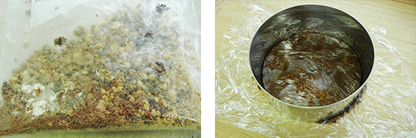
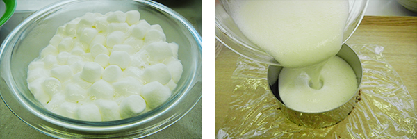
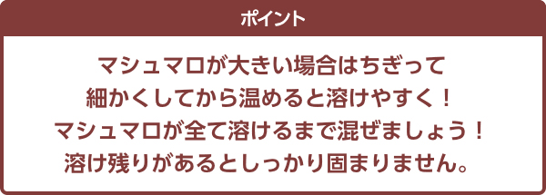

外はサクサク、中はしっとり。そのうえチョコチップたっぷり！
SEIYU のオリジナル商品「みなさまのお墨付き」。その中から今回は、昨年の夏に登場したソフトクッキーをご紹介します。
この商品の特徴は、なんといっても食感！ 2 種類の生地を使って、外はサクサク、中はしっとりに仕上げました。
お子様でも食べやすく、大人の方にはちょうどいい、ひと口サイズのクッキーは、口に入れるとたっぷりのチョコチップの風味や甘みが広がって、贅沢な気分になれるんです♪
試行錯誤の末に生まれた自信作！支持率は95％超え！
商品化まで約半年〜 1 年ほどのものが多いなか、実はこのソフトクッキーは開発に 3 年もかかっているんです。
一番大変だったのは、この食感を出すこと。
焼きすぎると固くなってしまうし、生地が柔らかすぎると固まらない。また、チョコチップの量を多くすると生地を機械に通す際に詰まる問題もあり、何種類もの生地の配合を考えたりチョコチップの大きさを変えたりし、ひとつひとつ問題をクリアしてきました。
そんな努力と思いが詰まっているだけあって、消費者テストでは 95.4％ の支持率を獲得！
自信を持ってオススメできる商品になりました。
そのままでも十分おいしいソフトクッキーですが、実はデザートへのアレンジもしやすいんです。 冷蔵庫で冷やすとパキっとした食感に、電子レンジで軽く温めるとチョコチップが溶けてトロッと食感に。 夏は砕いてアイスクリームに混ぜて食べるのも、美味しいんです！
ということで、ソフトクッキーを使った、オススメの簡単アレンジレシピをお教えします。
おうちでぜひ試してみてくださいね。
材料（ 4 個分）
ソフトクッキー … 4 枚
クリームチーズ … 適量
お好みのフルーツまたはジャム … 適量
ナッツ … 適量
はちみつ … 適量
作り方
①ソフトクッキーの上にティースプーン 1 杯分のクリームチーズを盛り、お好みのフルーツまたはジャムをのせる。
②ナッツを散らし、はちみつをかける。
材料（ 12cm のタルト型 1 台分）
【タルト生地】
ソフトクッキー … 8 枚（バニラ 4 枚、ココア 4 枚）
バター（またはマーガリン） … 5g
牛乳 … 小さじ 1
【ケーキ】
ヨーグルト … 200g
マシュマロ … 100g
【飾り】
ブルーベリー … お好みで
ブルーベリージャム … お好みで
ミント … お好みで
作り方
①ソフトクッキーを耐熱のビニール袋に入れ、麺棒等で砕いたら、バター、牛乳を加え、電子レンジ (500W) で 30 秒温める。
② 1 をビニール袋の中でしっかり練ってひとまとめにし、ビニール袋から出してタルト型の底にすき間なく敷きこむ。
ソフトクッキーを砕いて練って、タルト生地を作ります。
③耐熱ボウルにヨーグルトとマシュマロを入れ、レンジ 500W で 2 分温め、ヘラで混ぜてマシュマロを溶かす。
マシュマロをしっかり溶かすと、なめらかな口当たりに♪
④ 2 の上に 3 を流し込み、冷蔵庫で 3 時間冷やす。
⑤お好みでブルーベリーやブルーベリージャム、ミントなどで飾りつけを。
※調理後は早めにお召し上がりください。
商品情報

SEIYUのオススメ商品発掘し隊！では他にも話題の商品、隠れた人気商品をご紹介しています！

- ※このページに記載の情報は、 2016 年 7 月 7 日時点のものです。予告なく変更になる場合があります。
- ※掲載の商品は、店舗によりお取扱いがない場合がございます。